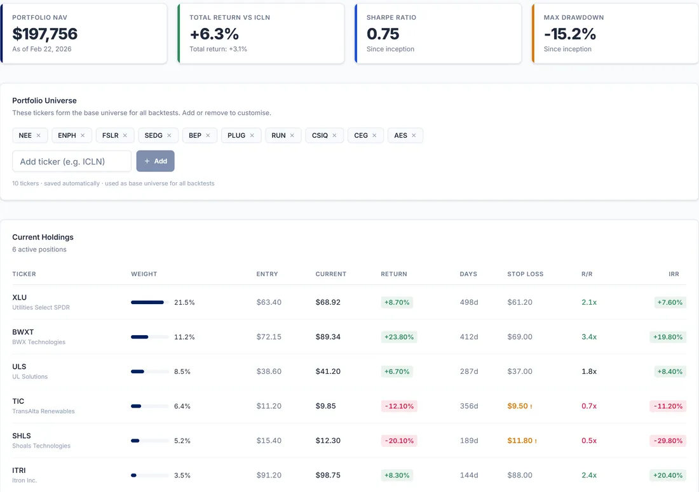
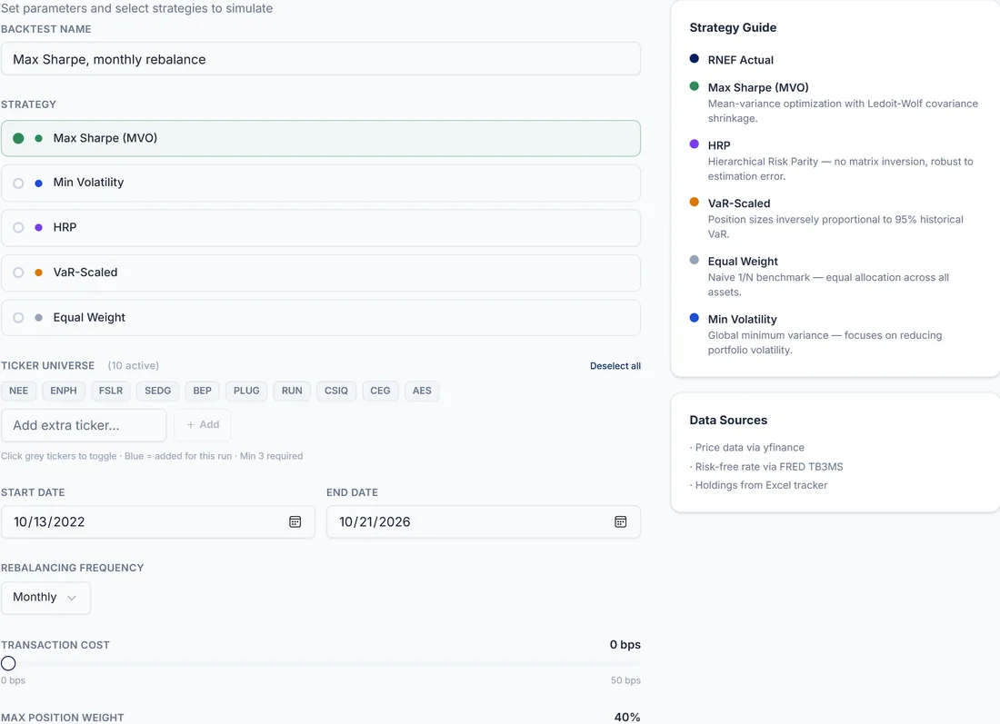
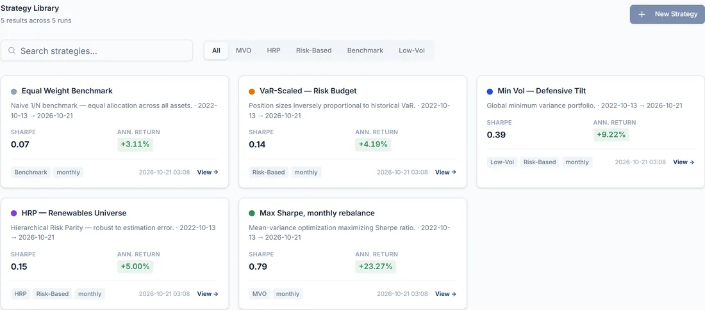
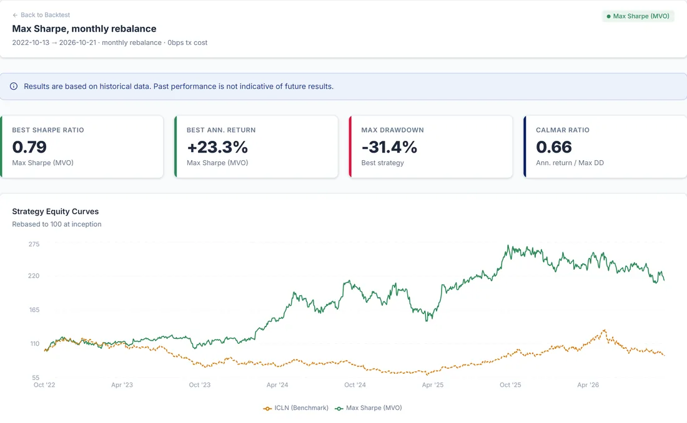
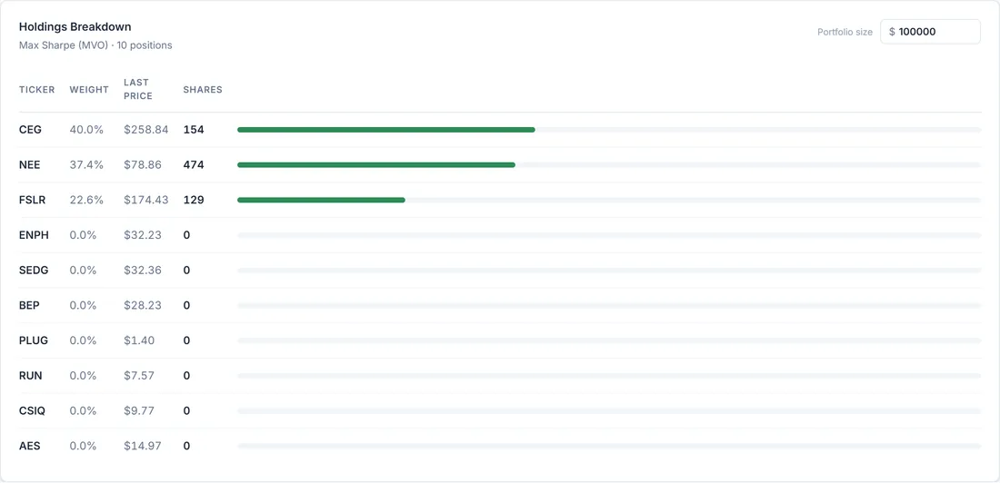
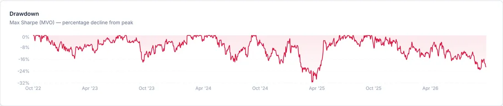

RNEF Portfolio Management
A backtesting tool for the Rice Renewable Energy Fund, a student-run fund with about $200K under management.
- Role
- Project lead. I wrote the PRD and roadmap, built most of the UI and rewrote the backtest engine.
- Team
- 4 developers, through Rice INFORMS
- Status
- Live and in use by the fund
- Result
- Shipped in April 2026, 7 weeks after the PRD
Problem
The fund ran on one Excel workbook tied to FactSet. Outside FactSet, the position-sizing sheet broke with #NAME? errors, and checking a stop-loss meant opening the file.
Since October 2022 the fund was up 3.10%, while its benchmark, the ICLN clean energy ETF, was down 3.24%. But 44% of the money sat in cash and a money-market fund, and there was no process for building or rebalancing the portfolio. We wanted to know whether the fund was beating its benchmark mostly by being barely invested.
I wrote the requirements from an audit of the fund's spreadsheet and from conversations with fund members. The PRD listed 17 modules, each ranked core, high or stretch, with an owner and an effort estimate. My roadmap had 4 phases, and each one ended with a check, such as our numbers matching Excel within 0.5%.
The tool had to:
- Compare portfolio strategies against the fund's real returns and against ICLN.
- Use live market prices and the fund's own list of stocks.
- Sit beside the Excel tracker and only read from it.
- Run in a browser with nothing to install.
Key decisions
Cut 5 pages to one backtesting tool

With 4 developers and one semester, I cut the scope from a 5-page analytics suite to a backtesting tool. The plan had pages for an overview, optimization, backtesting, risk and benchmarking. I dropped the risk dashboards, stress tests and performance attribution, and put the fund's headline numbers and holdings on one dashboard screen.
Moved the backend into the web app

A backtest takes a strategy, a set of stocks, a date range, a rebalancing schedule and a trading cost, then runs on live market prices. In April the separate Python backend kept failing to fetch those prices. I rewrote it inside the web app, so the whole tool deployed in one place with no second server to keep alive.
Our hosting plan's free tier wouldn't let me add teammates, so I set up automatic preview deployments for their pull requests.
Shipped a print button instead of a PDF report

Every run is saved to a strategy library, where it can be reopened or run again. A full PDF report was on the backlog. I shipped a print-to-PDF button instead and left the full report as an open issue.
Results

The tool shipped in April 2026, 7 weeks after the PRD, and the fund still uses it. It tests 5 strategies on the fund's stocks and compares each one with the fund's actual returns and with ICLN. The runs in these screenshots use the fund's 10 stocks from October 2022 to October 2026, monthly rebalancing and no trading costs.

The holdings view turns a strategy's weights into share counts for any portfolio size, so a result maps straight to trades. With only 10 stocks to choose from, max-Sharpe put everything into 3 of them in this run, with the largest at the 40% cap.

In our final report, a max-Sharpe portfolio of the same stocks had a Sharpe ratio of 1.20 over the fund's history, against −0.28 for the fund and −0.02 for ICLN. Those numbers are in-sample, so they flatter every strategy. The run in the charts above still fell 31% from its peak in April 2025.
Most of the fund's 6.34-point lead over ICLN came from holding cash. The same stocks, fully invested in a max-Sharpe portfolio, would have ended about 150 points above the fund. That figure is an upper bound, since it also includes better weights and look-ahead bias.
What I'd do differently
Walk-forward testing never got past a toggle in the UI, so every Sharpe ratio above carries look-ahead bias. I'd build it before adding a single strategy.
Results are saved in each person's browser, which means fund members can't share a backtest with each other. I'd store them on a server from the start.